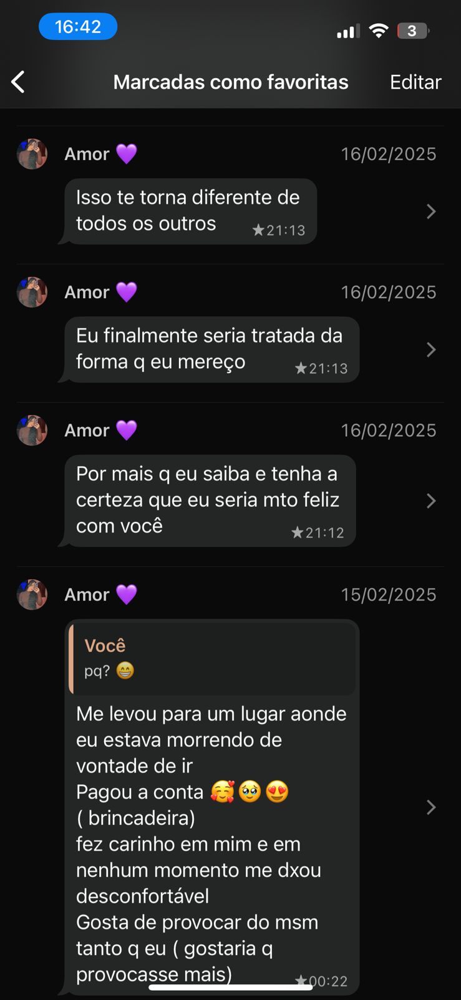
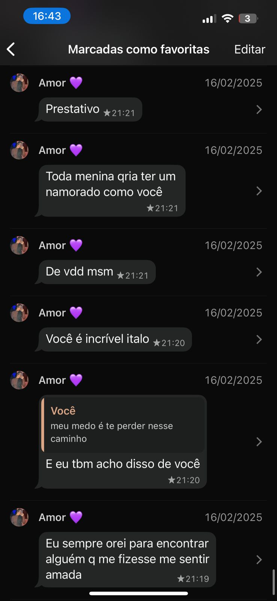

💌 Como nos conhecemos
A primeira vez que conheci o meu amor foi em uma apresentação de ballet no teatro da Caesb. Ela era a principal da apresentação, e eu lembro como se fosse ontem o jeito que ela dançava e fazia tudo parecer mais leve. Não tenho dúvidas de que, naquele dia, me apaixonei por essa cabeçuda. Quando acabou a apresentação de balé, eu, bem na cara de pau, falei para a minha irmã mais nova, que também dança ballet, ir até a Duda pedir para tirar uma foto com ela e me chamar para tirar essa foto, porque eu queria algum jeito de ter uma interação sem parecer algo muito forçado kkkkkk. Quando fui tirar a foto das duas, eu elogiei a Duda, dizendo que ela tinha dançado muito lindo e tudo mais. Depois daquele dia, saí perguntando para todos os meus amigos do VIP qual era o Instagram da Duda, para eu começar a seguir e ver se desenrolava alguma coisa. Depois disso, a gente começou a conversar, e ali eu já tinha a certeza de que era ela quem eu queria ao meu lado para a vida inteira.
🌹 O Primeiro Encontro
Dava segunda, quarta e sexta, e eu já ficava felizão porque era dia de ballet, e eu já sabia que ia ver a Duda. A primeira vez que eu a levei no ballet, lembro o quanto eu estava nervoso, porque seria a primeira vez que eu a veria tirando o dia da apresentação, quase um “primeiro encontro” mesmo. E FOI BOM PRA KRALHO!!! Cantamos Baco, conversamos sobre várias coisas e rimos muito. A Duda descobriu que eu era calvo, e naquele dia eu vi de perto a testa enorme dela. Ali, eu realmente me senti em casa e confortável estando com ela. Mas o nosso primeiro encontro oficial mesmo foi em um açaí que ela estava com muita vontade de ir. Foi a primeira vez que eu levei alguém para um encontro de carro, eu mesmo dirigindo, e nunca vou esquecer disso. Eu fiquei de cara, porque parecia que eu e a Duda já nos conhecíamos há anos. Sempre foi assim: a conexão que a gente tem é absurda, e por isso eu me apaixono mais e mais. Nesse mesmo dia, quase que demos nosso primeiro beijo, mas acho que ela não sabia beijar e não queria usar a língua KAKAKKAKAAKA, só ficou no selinho, CU!. Depois que a deixei em casa, continuamos conversando, e ela me mandou umas mensagens que eu guardo com muito carinho até hoje.


🕢 O Presente
Viver com você ao meu lado é muito fácil, meu bem. Te amar do jeito que eu amo é bem mais natural do que parece. Você me completa de uma maneira única.Olha que loucura eu dizer que os dias que eu mais espero da semana são terça e quarta, só pra poder te ver. Sem você, nada disso seria tão incrível quanto está sendo. Tornamos nosso relacionamento algo tão gostoso e verdadeiro de viver que eu não quero que isso tenha fim.Eu AMO (bordão da Maria Eduarda) lembrar como eu e você nos tornamos nós. Obrigado por tudo, meu neném! Quero te amar e cuidar de você até ficarmos velhinhos.
💍 O Futuro
Todos os dias da minha vida, tenho certeza de que é com ela que eu quero viver pelo resto da vida, construir uma família linda com ela: o Henrique primeiro e depois a Heleninha, que aí ele vai cuidar dela e vão ser grandes amigos. imagino eu e a duda, os dois na frente da porta do apartamento com a chave na mão, olhando tudo aqui e pensando: “Estamos conseguindo realizar tudo que a gente sempre sonhou”, os dois com carrão e vivendo tudo que sempre quisemos, viajando muito e aproveitando a vida ao lado da pessoa certa. E finalmente, o dia em que eu vou vê-la de branco vindo na minha direção, e com certeza eu chorando KAKAKAKAKAKA, ela toda linda, e ali eu percebendo que eu venci na vida. Meus planos para o futuro com a Duda são basicamente esses e alguns outros. Só sei de uma coisa: a gente vai ser feliz pra kralho e viver do jeito que sempre sonhamos, com uma casa confortável, na nossa vibe mesmo, daqueles apartamentos aconchegantes, nossos dois filhinhos LINDOSSSS com os olhos da mãe, dois carrões fodas na garagem e, o principal de tudo, MUITO FELIZES!
 Primeira vez que ela foi na minha casa 💕
Primeira vez que ela foi na minha casa 💕